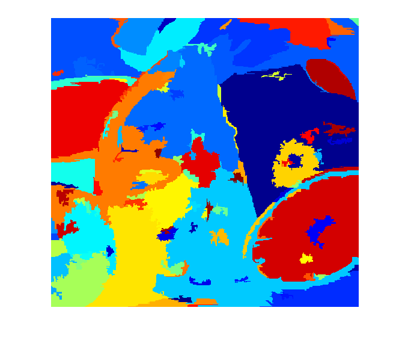

Graph-Based Image Segmentation demo
A program demonstrating the use and capabilities of a particular graph based image segmentation algorithm described in:
P. Felzenszwalb, D. Huttenlocher, "Efficient Graph-Based Image Segmentation" International Journal of Computer Vision, Vol. 59, No. 2, September 2004
Sources:
Contents
Load image
in = imread(fullfile(mexopencv.root(),'test','fruits.jpg')); assert(~isempty(in), 'Failed to load input image');
Create object
gs = cv.GraphSegmentation(); gs.Sigma = 0.5; gs.K = 300; gs.MinSize = 100;
Segment image
cv.Utils.setUseOptimized(true);
cv.Utils.setNumThreads(8);
tic
out = gs.processImage(in);
toc
nb_segs = numel(unique(out(:)));
fprintf('%d segments\n', nb_segs);Elapsed time is 0.157844 seconds. 116 segments
Show result
if false res = zeros([size(out) 3], 'double'); res(:,:,1) = mod(double(out) * 0.618033988749895 + 0.24443434, 1.2) * 360; res(:,:,2) = 0.95; res(:,:,3) = 0.80; res = uint8(255 * cv.cvtColor(res, 'HSV2RGB')); else out = double(out) + 1; res = label2rgb(out, jet(nb_segs), 'k', 'shuffle'); end imshow(res)